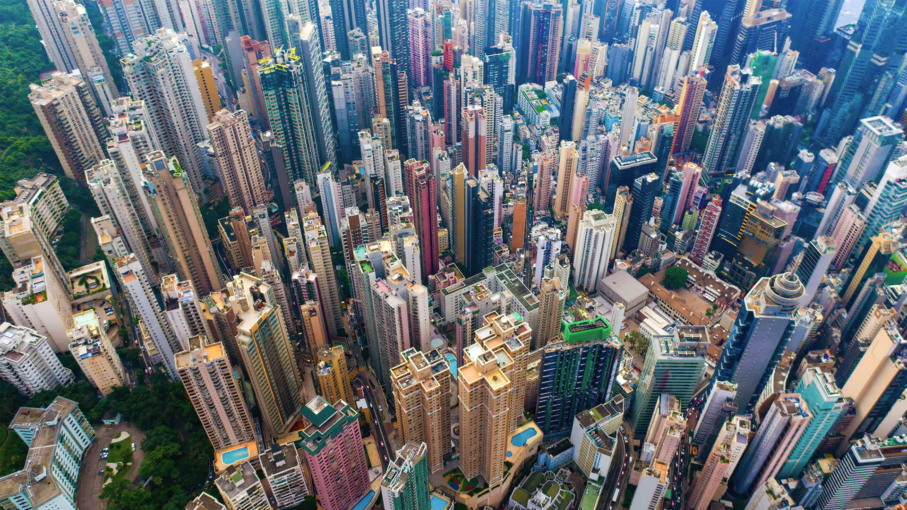

Urbanization
Urbanization modifies the terrain in a variety of ways that promote and worsen erosion. Many construction projects begin by eliminating vegetation and native landscapes, such as forests and grassland, which impairs soils' ability to absorb water, leaving soils exposed and prone to erosion for many years before the project is completed.
Building and road construction churns up the earth and exposes soil to erosion. Soil swept up by the wind is frequently found in the air near construction projects. Construction that has been completed can also lead to erosion.
Setting up buildings and roads has a role to play in soil erosion since they do not allow for regular water movement. Instead, it rushes off to flood surrounding regions, hastening erosion in these locations.
Cities also have a lot of impermeable surfaces that don't let any water in. This enhances surface runoff, which washes away fractured particles of soil in between.